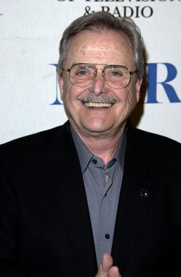

#5343 Die Reifeprüfung
Alternativ: The Graduate
Auszeichnungen: 1 Oscars gewonnen für 6 Oscars nominiert 5 GoldenGlobes gewonnen 5 BAFTA-Awards gewonnen

 IMDB-Wertung: 8.0 / 10
IMDB-Wertung: 8.0 / 10  Metascore: 0
Metascore: 0 
Benjamin Braddock ist soeben mit dem College fertig geworden, fast 21 Jahre alt, und hat keinen Plan, was er jetzt anstellen soll. Ein Leben lang den "Ratschlägen" seiner Eltern gefolgt und sich immer brav engagierend, muss Benjamin nun erstmals selbst entscheiden, wie's für ihn weiter gehen soll - und ist komplett ratlos. Mitten in diese Sinnkrise platzt Mrs. Robinson, eine Freundin von Benjamins Eltern, die ihm ein unmißverständliches Angebot macht: Ich will dich, ruf mich einfach an und sag mir wann und wo. Nach anfänglichem Zögern nimmt Ben diese offene Einladung zu einer Affäre an und lebt zwischen Swimmingpool und Hotelzimmer ziellos in den Tag hinein. Bis Elaine, Tochter der Familie Robinson, heimkehrt, und sich die beiden jungen Leute gegen den ausgesprochenen Willen von Mrs. Robinson ineinander verlieben.
Jahr: 1967
Dauer: 105 Minuten
FSK: 12
Land: USA Studio: An Embassy Pictures ReleaseTonspuren:
Untertitel: Deutsch, Englisch,
Auflösung: 1080p (1920x816) Größe: 9768 MB
Genre: Drama, Komödie
Regisseur: Mike Nichols
Drehbuch: Marcos Carnevale
Soundtrack:
Darsteller:
 Anne Bancroft als Mrs. Robinson
Anne Bancroft als Mrs. Robinson Dustin Hoffman als Ben Braddock
Dustin Hoffman als Ben Braddock Katharine Ross als Elaine Robinson
Katharine Ross als Elaine Robinson-  William Daniels als Mr. Braddock
 Murray Hamilton als Mr. Robinson
Murray Hamilton als Mr. Robinson Elizabeth Wilson als Mrs. Braddock
Elizabeth Wilson als Mrs. Braddock Buck Henry als Room Clerk
Buck Henry als Room Clerk- Brian Avery als Carl Smith
 Walter Brooke als Mr. McGuire
Walter Brooke als Mr. McGuire Norman Fell als Mr. McCleery
Norman Fell als Mr. McCleery Alice Ghostley als Mrs. Singleman
Alice Ghostley als Mrs. Singleman- Marion Lorne als Miss DeWitte
- Eddra Gale als Woman on Bus
 Frank Baker als Hotel Guest , uncredited
Frank Baker als Hotel Guest , uncredited Richard Dreyfuss als Boarding House Resident , uncredited
Richard Dreyfuss als Boarding House Resident , uncredited- Mike Farrell als Bellhop in Hotel Lobby , uncredited
- Donald F. Glut als College Student , uncredited
 Harry Holcombe als The Minister , uncredited
Harry Holcombe als The Minister , uncredited- Elaine May als Girl with Note for Benjamin , uncredited
- Lainie Miller als Night Club Stripper , uncredited
- Ben Murphy als Shaving Student , uncredited
 William H. O'Brien als Hotel Guest , uncredited
William H. O'Brien als Hotel Guest , uncredited Kevin Tighe als Showering Student , uncredited
Kevin Tighe als Showering Student , uncredited- David Westberg als Valet Parker , uncredited
 George Bruggeman als Church Member , uncredited
George Bruggeman als Church Member , uncredited- Buddy Douglas als Bellhop in Hotel Lobby , uncredited
 Elisabeth Fraser als Second Lady , uncredited
Elisabeth Fraser als Second Lady , uncredited- Jonathan Hole als Mr. Singleman , uncredited
- Robert P. Lieb als Party Guest , uncredited
- Eve McVeagh als Party Guest , uncredited
- Noam Pitlik als Gas Station Attendant , uncredited
- Hal Taggart als Hotel Guest , uncredited
- Arthur Tovey als Hotel Guest , uncredited
Datei: X:\1967\Reifeprüfung, Die (1967, FSK12, 1920x816).mkv seit 17.01.2017
Festplatte: HD 1900-1970
 Es gibt insgesamt 24 Filme in der Gruppe '1967'
Es gibt insgesamt 24 Filme in der Gruppe '1967'